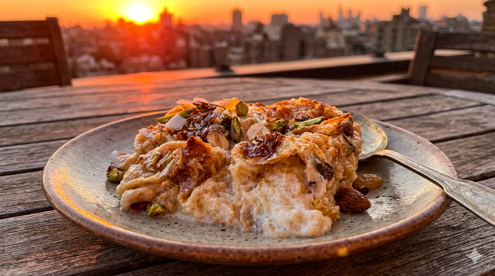

Om_Ali

Egypt's legendary bread pudding: a warm, creamy blend of flaky pastry, milk, and toasted nuts.
Egypt's legendary bread pudding: a warm, creamy blend of flaky pastry, milk, and toasted nuts.
PREP. TIME:
15 Mins
COOK. TIME:
20 Mins
SERVINGS:
6 People

1
Prepare the Base: Break the baked puff pastry into small, bite-sized pieces and spread them evenly in a deep baking dish.
2
Add the Crunch: Sprinkle the mixed nuts, coconut, and raisins over the pastry pieces, ensuring they are well-distributed.
3
Heat the Milk: In a saucepan, bring the milk and sugar to a boil. Once boiling, remove from heat and stir in the vanilla extract.
4
The Soak: Pour the hot milk mixture over the pastry. Let it sit for 5-8 minutes until the pastry has absorbed most of the liquid.
5
The Crust: Spread the heavy cream evenly over the top of the soaked pastry to create a rich topping.
6
Broil: Place the dish under the oven broiler for 5-10 minutes until the top becomes bubbly and golden brown.